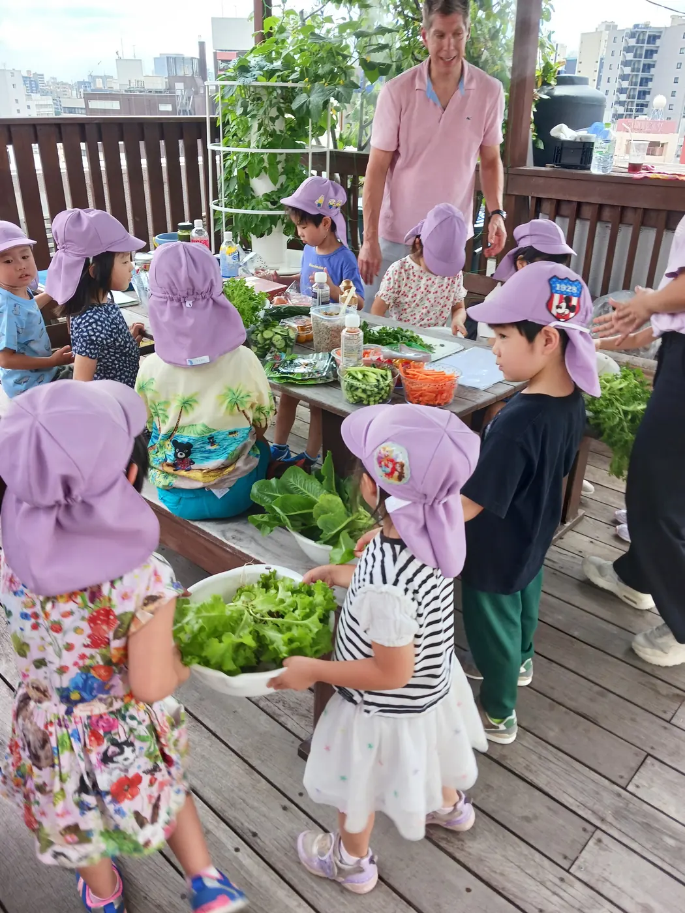

Hands-on STEM camps every school break.
Winter, spring, summer, and fall camps with hydroponics, science, engineering, and outdoor discovery. Ages 5 and up, in Motoazabu, Tokyo.

Winter Discovery Camp 2026
December 14–23, 2026, 10 days including the weekend. Pick any days and mix mornings, afternoons, and full days, from a single session to all ten days.
9:00–14:00 ¥10,000 / day
Build, grow, and investigate: science and technology, engineering projects, hydroponics, urban farming, and outdoor discovery, with a lunch break.
14:00–17:30 ¥7,500 / day
Nature-inspired art, eco-crafts, sustainability challenges, and relaxed creative making.
9:00–17:30 ¥15,000 / day
Morning and afternoon together. Save ¥2,500 compared with booking the sessions separately.
5 and up
The Greentopia School, 3rd floor, J's International School, 2-12-14 Motoazabu, Minato-ku, Tokyo
Any combination of days and sessions. No minimum number of days.
Registering requests a place. We'll confirm your booking and email the total and payment instructions. Spaces are limited, and camps run subject to minimum enrollment. Questions? info@greentopia.jp
Upcoming camps
We run a camp every school break, all year round.
What campers do
Every Greentopia camp blends hydroponics, science experiments, engineering projects, outdoor exploration, and creative making. Mornings focus on bigger STEM and growing projects; afternoons are for art, crafts, and hands-on sustainability challenges. Themes change each season, so returning campers always have something new. Past themes include “Seed to Smoothie,” “Farm Engineers,” “Bug Detectives,” and “Future Farmers.”
Outdoor activities and field trips to local parks and gardens are part of most camps, weather permitting.